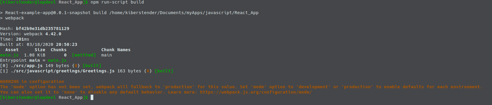
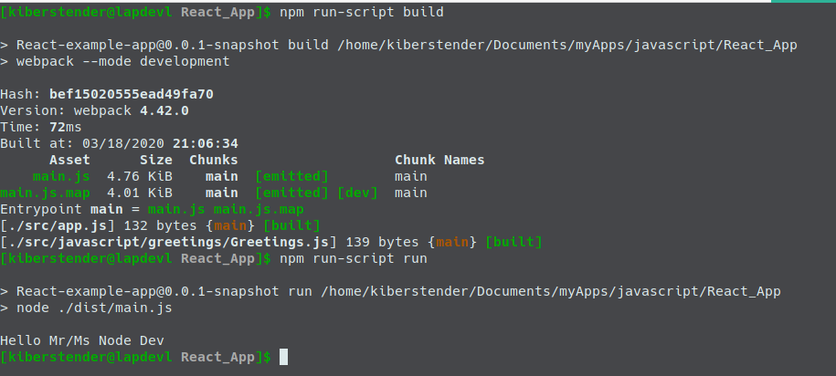
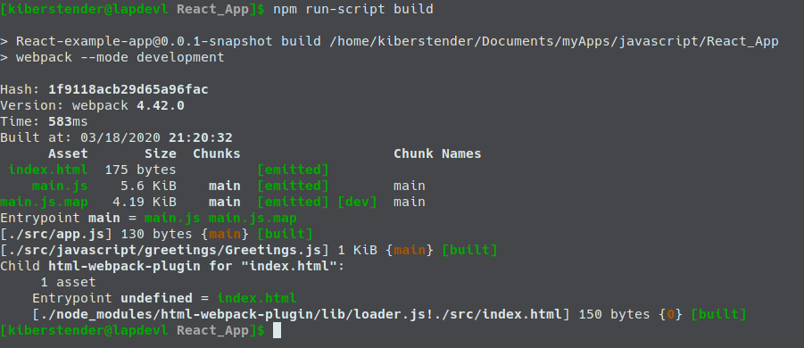
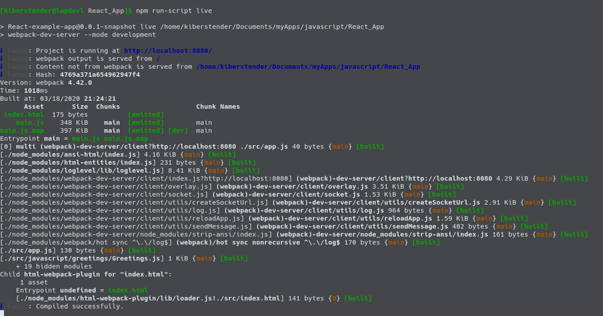
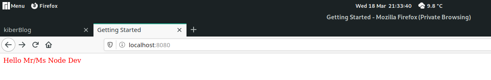
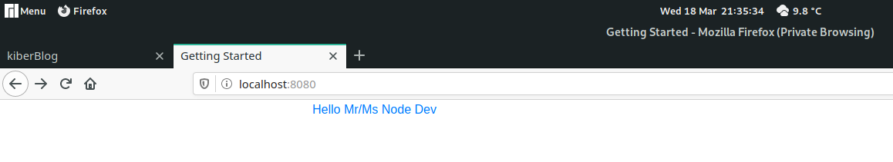
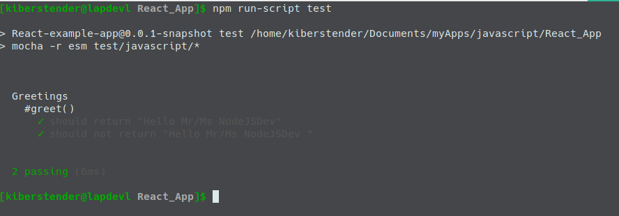

Introduction
Hello again dear reader. In the last post we learned what is NodeJS, how and why use it. Today we will give a step further and understand what, why and how to use Webpack. We will continue the development of our previous Javascript project, so if you did not read the first part please do it before reading this post.
Webpack
While NPM is like Maven for Node, you can list and download your dependencies, Webpack is where you tell what to do with these dependencies. When you are listing devDependencies in your package.json these dependencies are CLI(Command Line Interface) applications, that means, applications that run in your terminal/prompt cmd and these in particular you use to do some transformation in your code, like writing everything in Typescript and then converting to Javascript. While you could do it manually by installing Typescript compiler like you would do with Java compiler, Webpack let you create functions to act on your code, like you would do in automated way. Webpack also has a production/development mode where it does some default things for you, like uglify your code automatically when it is in Prod mode.
To guarantee that this post will not fail in the future, install everything in the same version I'm putting here:
npm install --save-dev webpack@4.42.0 webpack-cli@3.3.11 webpack-dev-server@3.10.3
Check your package.json file. NPM added new devDependency for you and it should contain a new property like this:
... "devDependencies": { ... "webpack": "^4.42.0", "webpack-cli": "^3.3.11", "webpack-dev-server": "^3.10.3" ... } ...
You might notice that in your app root a directory named node_modules was created. This directory contains the dependencies NPM downloaded for you and you can ignore it using your .gitignore file and/or .dockerignore because NPM will take care of if and re-create it if you delete, so no worries.
Not only this, but a new file was created in the root of your directory, named package-lock.json. This file is similar to package.json but with a small difference: It lists all the dependencies trees, making it easier for NPM to install the dependencies later and to verify if there is any conflict, like if package.json is the human readable version and package-lock.json is the machine readable version. It is always created automatically for you when you run npm install.
Explaning the libs we just installed we have:
- Webpack is an API to use inside your Node application to help customising builds
- Webpack-cli is a CLI app that does the same thing Webpack does but you don't need to import Webpack in your application, you can 'pass' your application as a parameter to Webpack and the rest is Webpack lib work
- Webpack-dev-server is a simple server to run your application in live-reload, so whenever you save a file, Webpack will detect if there is any difference and if so recompile only that file so you don't have to stop the whole application for one diff
Webpack has a default behaviour that, when you run it, it will look for a file named app.js in the src directory and create a new file named main.js and put it inside a directory named dist in the root of your application. But version 4.42.0(the one we are using now) has a problem and it is not correctly building our application, so to make it work it is mandatory that we create a file named webpack.config.js in the root of our app. After you create it add the following content:
const path = require('path'); module.exports = { entry: './src/app.js', output: { filename: 'main.js', path: path.resolve(__dirname, 'dist') }, devtool: 'source-map' };
PS: The creation of the file webpack.config.js is necessary only if you need to customise your build, usually if you plan to use default webpack there is no need to create such file, I'm just reinforcing here that there is a bug that forces you to create the file even if you won't use anything non default. For this example application we would create the file anywat
As you can see, this is a veeeeery simple config. The problem in the version 4.42.0 is that for some reason when you don't have the above file when you run webpack it complains that it cannot find ./src. Until it is solved I will keep it here for whoever is reading to know that this problem exists so it can be helpful.
Now add to the scripts field a new command:
... "scripts": { ... "build": "webpack" } ...
Now execute your script and you should see something similar to this:
This warning is there because as I mentioned in the beggining, Webpack has support for production and development environments, so when you don't specify which environment you are using it fallbacks to production and emit this warning to let you know that you need to specify the missing info. You can modify you script section in package.json and create two build commands like that:
... "scripts": { ... "build": "webpack --mode development", "build:prod": "webpack --mode production" } ...
Now if you run the build command, you won't see any warning. If you check the root of your app directory you might notice a new directory named dist. This directory contains one file named main.js. This file is way bigger than the two files we have in our code base, because Webpack helps you adding some things to enable you using 'import/export' syntax, so let's say you want to import third-party momentjs library you can add in the top of your file(after installing using npm install):
import moment from 'moment'
console.log(`Time now: ${moment(new Date()).format()}`);
Or even your own libraries once you start developing them. Let's do this. First go to the Greetings.js and change it to the following:
export default class Greetings { constructor(name){ this.name = name; } greet(){ return `Hello Mr/Ms ${this.name}`; } }
Now go to app.js and change it to the following:
import Greetings from "./javascript/greetings/Greetings" let greetDev = new Greetings("Node Dev"); console.log(greetDev.greet());
If you want to run the app now you can add a new command to scripts:
... "scripts": { ... "run": "node ./dist/main.js" } ...
Now you can run your "Hello, Mr/Ms Node Dev" app again:
And you have a more updated syntax. Instead of using require function, you now can use import/export.
Customised build configuration
In webpack.config.js file you specify all the things you want to build in your application, like, compiling Typescript to Javascript, SASS to CCSS, copy the files from one directory to another (Imagine you are working with Spring for example, instead of putting everything in the dist you copy to /src/main/resources/static/) and other sort of nice things we will see. In entry you can change where Webpack will look for your first Javascript file(instead of looking for app.js inside src you can change it to look for index.jsinside js for example) and in output you can change where to put the processed files and the final processed file name. In devtools we are simply telling Webpack to create a map file for all of your javscript files, making it easier for browsers to debug and interpret you code.
Loaders
After a basic configuration (In my case I simply kept the default configuration for now), you have to understand a concept Webpack brings to us: The concept of Loaders.
Loaders are apps that operates in some files (defined by you) and do transformation, validation, modification in these files. So for exemple, nowadays we have at least 3 major versions of Javascript: ES5, ES6 and ES2018. Both of them have differences and some browsers have partially implemented them. So let's say you want to use all new syntax from ES2018 but you are affraid that not all your users use updated browsers or even that browsers does not have a good and stable implementation in some features you are interested in(like import/export).
A good solution we have today is to use Babel. Babel is a transpiler from Javascript to Javascript, so you can code in ES2018 and compile (or in this case transpile) to an older version of Javascript that browsers have already mastered. In order to do that you have create a loader in your Webpack config. So first thing, add Babel as a devDependency:
npm install --save-dev babel-loader@8.0.6 @babel/core@7.8.4 @babel/preset-env@7.8.4
Now change your webpack config file to add the loader:
... devtool: 'source-map' module: { rules: [ { test: /\.(js|jsx)$/, exclude: /node_modules/, use: { loader: "babel-loader", options: { presets: ['@babel/preset-env'] } } } ] } ...
Now you not only have support for import/export as you had before, but Babel will make sure that old browsers will run your code as well.
HTML-Loader and HTMLWebpackPlugin
Well, it's cool and nice but the idea of this tutorial is to create a frontend app and not a CLI app. So next step is to deal with HTML files. But... what is it there to deal with? HTML is a so simple "language*", why would you need to handle it? Fow now we only have one javascript file(main.js), but as the application grows the best practices ask us to split in as many files as we can/need and because Javascript is interpreted language, if you forget to include some file (via import or via <script src=".../path">) you won't notice it until it is too late. So we have an automated way to add automatically all Javascript and CSS files, to never forget them. To achieve this we have the HtmlWebpackPlugin. A plugin unlike the loader will modify the files adding and removing things (roughly speaking, a plugin can do even more, it can act on all compilation lifecycle). In order to configure this plugin you first add it via npm install ...:
npm install --save-dev html-webpack-plugin@3.2.0
Now you have to change webpack.config.js and in the line below path variable declaration you "import" HTMLWebpackPlugin:
const path = require('path'); const HtmlWebpackPlugin = require('html-webpack-plugin'); ...
After "declaring" HtmlWebpackPlugin now you configure it in plugins property and tell which HTML file you want to ooperate:
... module.exports = { entry: ..., output: {...}, module:{...}, plugins: [ new HtmlWebpackPlugin({template: './src/index.html'}) ] } ...
PS: You can specify more than one HTML file but remember that Webpack is more indicated for applications with one page only. The famous SPA(Single Page Application)
If you run it, you'll notice that you'll have two problems:
- We don't have an HTML file yet
- Webpack will complain that we need a loader for HTML files
So first let's fix the missing HTML file. Create our HTML file named index.html inside src. Now that you created the file add the contents:
<!doctype html> <html> <head> <title>Getting Started</title> </head> <body><div id="root"><div></body> </html>
Now we add a loader for HTML files. Simply install html-loader in your devDepencies list by:
npm install --save-dev html-loader@0.5.5
Now you should have two new devDependencies in you package.json file like I do:
PS: Old pic before using webpack 4.42.0
You could run now, but it would still not work, because we haven't configured html-loader, so let's do it:
... module: { rules: [ ..., { test: /\.(html|htm)$/, use: { loader: 'html-loader' } } ] } ...
If you run now this is what you are supposed to see:
But not only this. If you pay attention to our HTML file, there is no <script> tag there, but if you go to dist directory and open our index.html file you can see that there is a <script type="text/javascript" src="main.js"></script> including our main.js. The loader is not there only to help our plugin to work, we can tweak it to for example remove all blank spaces and the comments in your HTML file making it lighter to transfer. Simply add the following values in options property :
... { test: /\.(html|htm)$/, use: { loader: 'html-loader', options: { // Disables tags and attributes processing minimize: true } } } ...
Now let's create our hot-reload command to run our application and reload it automatically everytime you do some changes in any file. Open you package.json and in the scripts property we will add this lines:
... "scripts": { ... "live": "webpack-dev-server --mode development", "live:prod": "webpack-dev-server --mode production" } ...
Run it and you will see this:
Go to http://localhost:8080 and see your page opened with a simple Title: Getting started and the rest of the page white. Let's put some action in it. Change your app.js file content to:
import Greetings from "./javascript/greetings/Greetings"; function component() { const element = document.createElement('div'); let greetings = new Greetings(); element.innerHTML = greetings.greet("John"); return element; } document.querySelector("#root").appendChild(component());
Without stoping the application, check your terminal after you save app.js and you will see Webpack recompiling/transpiling your changed files (in this case app,js only), now go to your browser and without pressing anything the white page will show you the below picture:
Like it did in the terminal.
But what about CSS?
As in Javascript we have many transpilers (Typescript, Coffescript, Javascript itself in different versions) in CSS we have two main transpilers(called Pre processors), LESS and SASS. In this tutorial I will use SASS because I will use Boostrap and Bootstrap is built using SASS, so by using both together you can use some more powerfull syntax from Bootstrap(like the fact that SASS allows you to create functions, so you can use Bootstrap pre-defined ones). If you for some reason don't want to use SASS but still want to use Bootstrap, don't worry, it is still possible, but you will have to compile Bootstrap to CSS and then call it in your LESS or pure CSS files without any problem. So let's start configuring SASS installing all our dependencies:
npm install --save-dev sass@1.25.0 sass-loader@8.0.2 style-loader@1.1.3 css-loader@3.4.2
Now we go to our webpack.config.js file and add a new rule in our module property:
... module:{ rules: [ ... { test: /\.s[ac]ss|css$/i, use: ['style-loader', 'css-loader', 'sass-loader'] } ... ] } ...
And that is all you need to do to have SASS in your code. A small mention here to the test property where we have this s[ac]ss. This is because we have two file formats for SASS: .sass and .scss. Both means the same, if you want to understand more about it read it here. One day I might do a tutorial focused in SASS and explain these differences in the file formats. Now to test if everything worked you can create a file app.scss in your /src/styles directory and put the following:
$a_color: red; //A variable .a-class-that-changes-font-to-red { color: $a_color; //Using the variable }
Then go to your index.html file and change our #root div to this:
... <div id="root" class="a-class-that-changes-font-to-red"></div> ...
Now the last chage: go to your app.js file and import our scss file:
import Greetings from "./js/greetings/Greetings"; import "./styles/app.scss"; ...
PS: Yes for CSS, SASS or LESS files, when importing them you don't add "from" keyword
Now if ou haven't stopped the application restart it or run it (npm run live) otherwise. If your text now is red, congratulations, you succeded in adding SASS pre proprocessor in your app:
Now let's add Bootstrap. Install the dependencies:
npm install bootstrap@4.4.1 jquery@3.4.1
You might notice these are our first non-devDependencies in the whole project, because we need them at runtime. jQuery is there because Bootstrap needs this library to work, we will not use jQuery for anything in this tutorial. Now to test if this worked add the following changes to your app.scss file:
@import '~bootstrap'; .a-class-that-changes-font-to-red { @extend .container; @extend .text-primary; }
Look again at your page(if you haven't stopped your application, otherwise run it again) and if the color is now blue, you did it, you have a fully working frontend application made with Webpack, Babel, Sass and Bootstrap.
Import path resolution
You might or might not have noticed a difference when importing Bootstrap and when import our Javascript and scss files. If you haven't noticed we are using relative import, that means we as the developer have to know where the file we want to import is in relation to the file importing it and pass the correct path. So instead of simply saying:
import Greetings from "greetings/Greetings";
We have to use:
import Greetings from "./javascript/greetings/Greetings";
Now imagine you have another module and for some reason you need to import Greetings inside this module, considering both modules (Greetings and the new module) are in javascript level/directory you would have to do this:
import Greetings from "../javascript/greetings/Greetings";
Even though this is just an extra dot to add, imagine how awful it would be if you change this new module to a different level/directory in a huge project, you will have to fix all import urls in this file. So to improve it and make Webpack work for us instead let's add module resolution:
... module.exports = { entry: ..., output: {...}, module:{...}, resolve: { modules: [path.resolve(__dirname, 'src/js'), path.resolve(__dirname, 'src/styles'), 'node_modules'] } plugins: [...] }
Now we are saying, for whatever module I'm importing, first, look for it in /src/javascript, if you cannot find it, look inside /src/style then if you still cannot find it, look inside node_modules. Then change our app.js file to this:
import Greetings from "greetings/Greetings"; import "index.scss"; ...
Now you don't need to care in which level/directory your files are when importing something.
Testing in Javascript with Webpack
If you have tried to run our old tests you will see that we have a problem now. We changed old require syntax in our Greeting.js file to use export syntax and Mocha does not know what to do:
To fix that we can install a dependency named esm and pass it in our test script in package.json:
npm install --save-dev esm@3.2.25
Then:
... scripts: { ... "test": "mocha -r esm test/javascript/*" ... } ...
Now last but not least, we change our GreetingsTest.js:
import assert from 'assert'; import Greetings from '../../../src/javascript/greetings/Greetings.js'; let greetDev = new Greetings("NodeJSDev"); ...
Now you can run it and everything will come back to normal:
And here we finish Webpack tutorial, I hope you have learned and understoo well everything I taught ^^
* Don't you ever say HTML is a language in an interview. EVER!
Conclusion
In this post we learned how Webpack work and how it can helps us improve productivity. We added SASS, Boostrap and Babel with new Javascript syntax support. We improved ou tests and finally made our CLI become a frontend app. Next step will be adding React to our application finishing the tutorial. If you for some reason speaks portguese and feel that you would understand this post better in this language feel free to go the Brazilian Portuguese version of this page. See you in the next post.